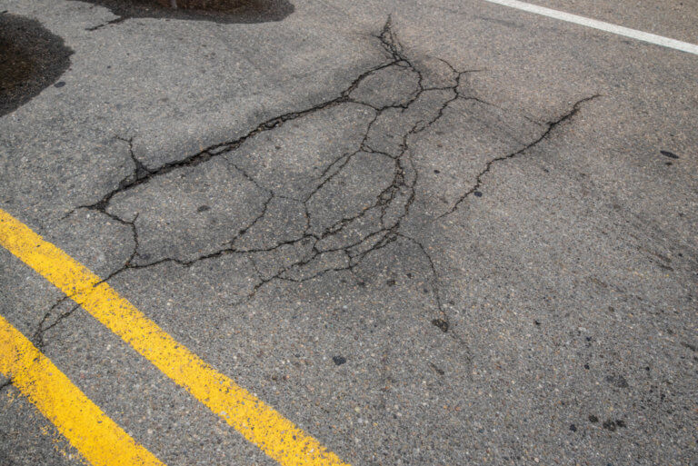
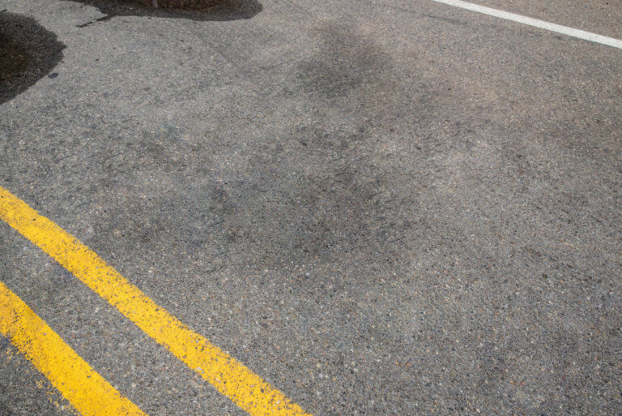
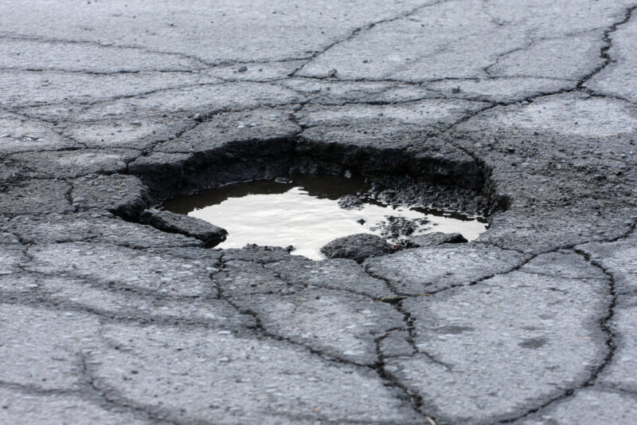
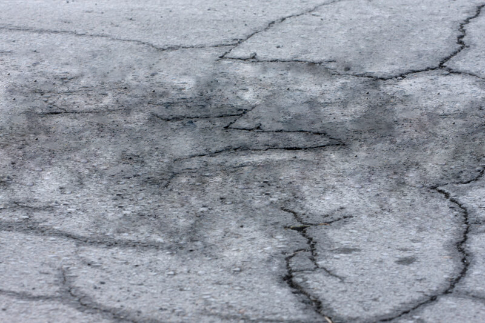
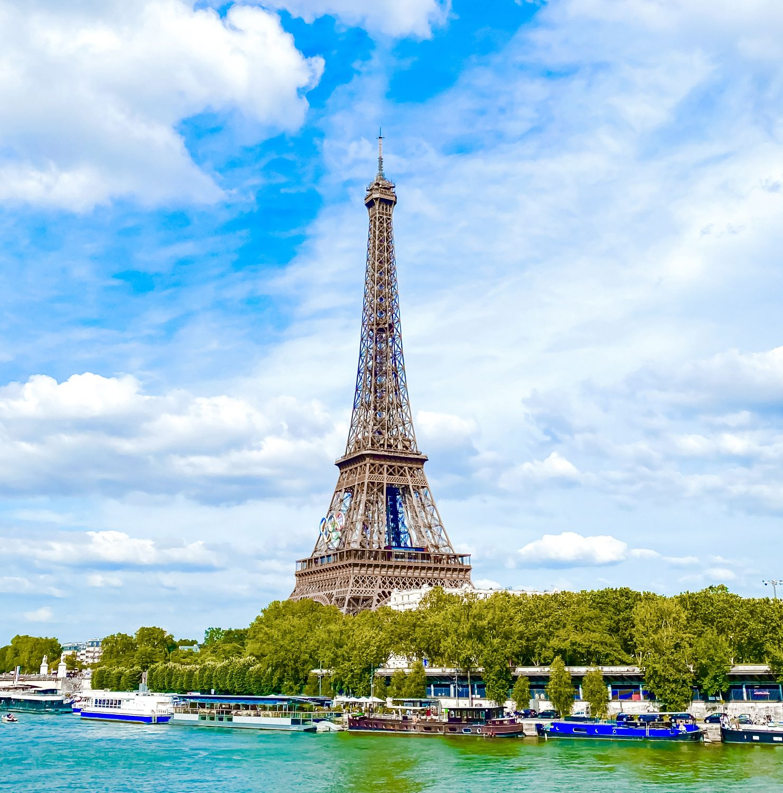
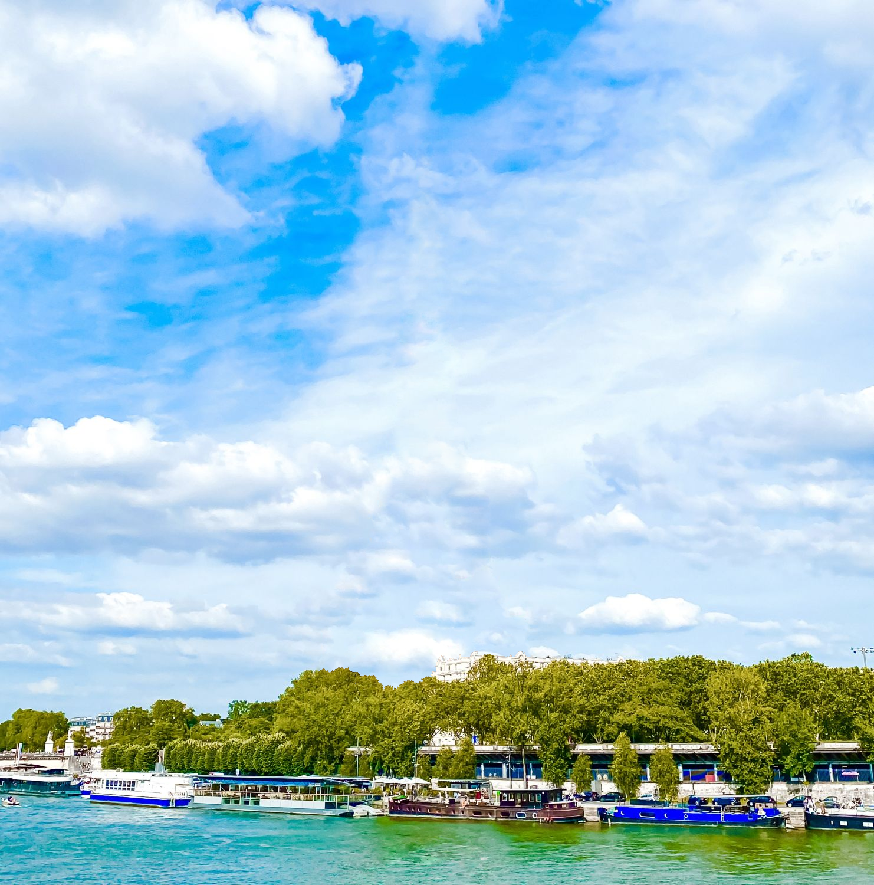
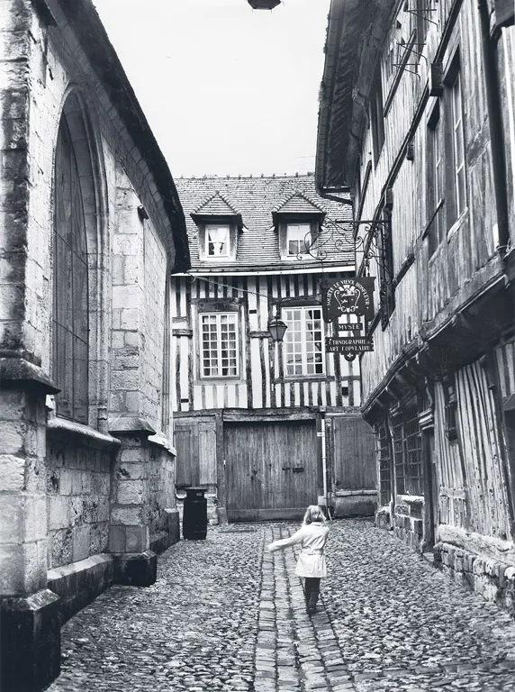
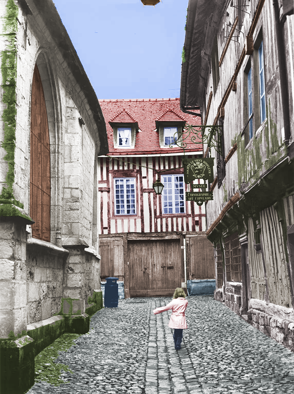

Eesmärk tutvustada Adobe Photoshop programmi. Mõningate ülesannete raames sai kodusel tegevusel kasutatud ka veebis olevat tasuta alternatiivi Photopea.
Õppiseme kasutam tööriista Patch, millega lapitakse pildil kohti mis vajavad silumist ja ühtlustamist.
Ülesanne oli leida kaks pilti millel kaotada ära mingi pragu või auk kasutades patch tööriista.
| Originaal | Uus |
|---|---|
|  |  |
|  |  |
Kasutades Selecti, Layereid, Eyedropperit, Paintbucketit ja Patch tööriista.
Ülesanne: vali internetist pilt, kaota sealt üks objekt ära, ning ehita taust tagasi nii, et ei saa aru et seal midagi kunagi oli.
| Originaal | Uus |
|---|---|
|  |  |
Kasutades kõike eelnevat, ning nüüd ka Adjustment Layereid.
Ülesanne: vali internetist vana mustvalge pilt, soovitatavalt linnapilt, ja koloriseeri foto ära.
| Originaal | Uus |
|---|---|
|  |  |
|
|
Digitaaljoonistus, sketchi ja layeritepõhise detailide ning objektide renderdusega.